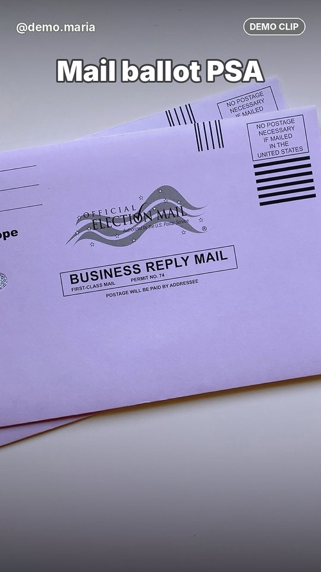
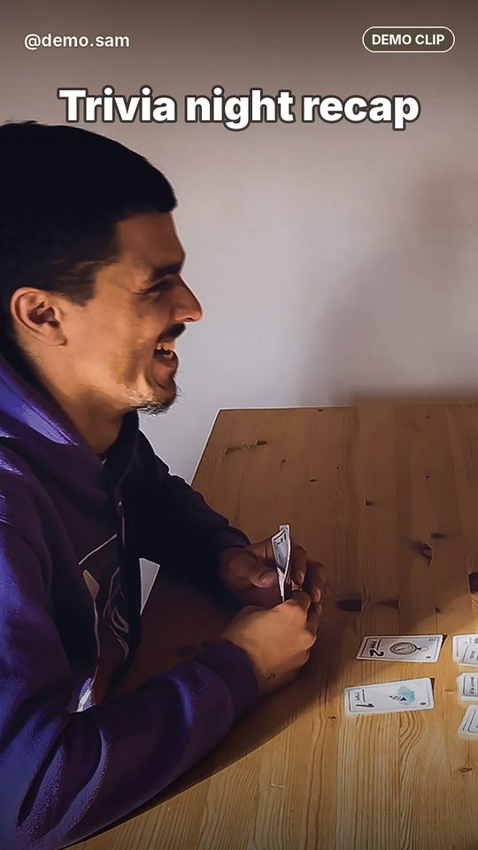

Stock photo · not members
Stock photo · not members
DEMO clip
Asked for a mail ballot before Nov 3? That request ends Dec 31.
@demo.maria
How to renewYoung Democrats of Seminole County · style guide
We're the friend who always knows the deadline, has a plan for Thursday, saves you a seat, explains the acronyms and remembers your name.
Every component in light and dark, with copy-paste markup. Quiet chrome, loud content: borders and hard shadows only on things you can tap or collect. Page builders copy from here, and add page-only styles under .p-<page>.
Tokens: assets/css/tokens.css · Behaviour: assets/js/ui.js · Every DEMO label stays.
Stock photo · not membersBrand constants are the same in both themes. Semantic tokens change with the theme: always style with the semantic token, and use a bright colour only as a fill under ink text.
--violet … --cream--bg--surface--text--text-muted--link--focus--edge--shadow.theme-light.theme-dark
#6A2BFFhero, brand blocks#4B12D6links, focus (light)#C8F03Cprimary CTA fill#FF7AC6accents, marker#FF4FA3issue colour#4FD6FFsecondary fills#FF8B3DDEMO tags, deadlines#FF6B1Aissue colour#00B3A6issue colour#7EE081issue colour (lime)#FFD23Fstickers#2236C9serious band#170B33ink#FFF6EAwarm off-white<div class="sg-swatches">
<div class="sg-swatch"><span class="sg-swatch__chip" style="--sw: var(--violet)"></span><b>--violet</b><code>#6A2BFF</code><span class="u-muted">hero, brand blocks</span></div>
<div class="sg-swatch"><span class="sg-swatch__chip" style="--sw: var(--violet-deep)"></span><b>--violet-deep</b><code>#4B12D6</code><span class="u-muted">links, focus (light)</span></div>
<div class="sg-swatch"><span class="sg-swatch__chip" style="--sw: var(--celery)"></span><b>--celery</b><code>#C8F03C</code><span class="u-muted">primary CTA fill</span></div>
<div class="sg-swatch"><span class="sg-swatch__chip" style="--sw: var(--bubblegum)"></span><b>--bubblegum</b><code>#FF7AC6</code><span class="u-muted">accents, marker</span></div>
<div class="sg-swatch"><span class="sg-swatch__chip" style="--sw: var(--hotpink)"></span><b>--hotpink</b><code>#FF4FA3</code><span class="u-muted">issue colour</span></div>
<div class="sg-swatch"><span class="sg-swatch__chip" style="--sw: var(--sky)"></span><b>--sky</b><code>#4FD6FF</code><span class="u-muted">secondary fills</span></div>
<div class="sg-swatch"><span class="sg-swatch__chip" style="--sw: var(--tangerine)"></span><b>--tangerine</b><code>#FF8B3D</code><span class="u-muted">DEMO tags, deadlines</span></div>
<div class="sg-swatch"><span class="sg-swatch__chip" style="--sw: var(--orange)"></span><b>--orange</b><code>#FF6B1A</code><span class="u-muted">issue colour</span></div>
<div class="sg-swatch"><span class="sg-swatch__chip" style="--sw: var(--teal)"></span><b>--teal</b><code>#00B3A6</code><span class="u-muted">issue colour</span></div>
<div class="sg-swatch"><span class="sg-swatch__chip" style="--sw: var(--mint)"></span><b>--mint</b><code>#7EE081</code><span class="u-muted">issue colour (lime)</span></div>
<div class="sg-swatch"><span class="sg-swatch__chip" style="--sw: var(--sun)"></span><b>--sun</b><code>#FFD23F</code><span class="u-muted">stickers</span></div>
<div class="sg-swatch"><span class="sg-swatch__chip" style="--sw: var(--lake)"></span><b>--lake</b><code>#2236C9</code><span class="u-muted">serious band</span></div>
<div class="sg-swatch"><span class="sg-swatch__chip" style="--sw: var(--night)"></span><b>--night</b><code>#170B33</code><span class="u-muted">ink</span></div>
<div class="sg-swatch"><span class="sg-swatch__chip" style="--sw: var(--cream)"></span><b>--cream</b><code>#FFF6EA</code><span class="u-muted">warm off-white</span></div>
</div>What the page reads. The same names resolve to different values in light and dark; bright and cream sections force light, night sections force dark.
var(--bg)var(--surface)var(--surface-2)var(--text)var(--text-muted)var(--link)var(--focus)var(--edge)var(--line)var(--shadow)var(--error)var(--success)var(--control)var(--inverse-bg)
Light
Dark
<div class="sg-swatches">
<div class="sg-swatch"><span class="sg-swatch__chip" style="--sw: var(--bg)"></span><b>--bg</b></div>
<div class="sg-swatch"><span class="sg-swatch__chip" style="--sw: var(--surface)"></span><b>--surface</b></div>
<div class="sg-swatch"><span class="sg-swatch__chip" style="--sw: var(--surface-2)"></span><b>--surface-2</b></div>
<div class="sg-swatch"><span class="sg-swatch__chip" style="--sw: var(--text)"></span><b>--text</b></div>
<div class="sg-swatch"><span class="sg-swatch__chip" style="--sw: var(--text-muted)"></span><b>--text-muted</b></div>
<div class="sg-swatch"><span class="sg-swatch__chip" style="--sw: var(--link)"></span><b>--link</b></div>
<div class="sg-swatch"><span class="sg-swatch__chip" style="--sw: var(--focus)"></span><b>--focus</b></div>
<div class="sg-swatch"><span class="sg-swatch__chip" style="--sw: var(--edge)"></span><b>--edge</b></div>
<div class="sg-swatch"><span class="sg-swatch__chip" style="--sw: var(--line)"></span><b>--line</b></div>
<div class="sg-swatch"><span class="sg-swatch__chip" style="--sw: var(--shadow)"></span><b>--shadow</b></div>
<div class="sg-swatch"><span class="sg-swatch__chip" style="--sw: var(--error)"></span><b>--error</b></div>
<div class="sg-swatch"><span class="sg-swatch__chip" style="--sw: var(--success)"></span><b>--success</b></div>
<div class="sg-swatch"><span class="sg-swatch__chip" style="--sw: var(--placeholder)"></span><b>--placeholder</b></div>
<div class="sg-swatch"><span class="sg-swatch__chip" style="--sw: var(--control)"></span><b>--control</b></div>
<div class="sg-swatch"><span class="sg-swatch__chip" style="--sw: var(--inverse-bg)"></span><b>--inverse-bg</b></div>
<div class="sg-swatch"><span class="sg-swatch__chip" style="--sw: var(--inverse-text)"></span><b>--inverse-text</b></div>
</div>Every pair from BRIEF §3.2 plus the pairs the components added, computed from tokens.css by a script on 2026-11-09 (WCAG 2.x relative luminance, truncated to 2 decimals). All 62 pass. Decorative only, never text: celery on cream (1.22), violet on night (3.00).
| Pair | Ratio | Brief | Needs | Use |
|---|---|---|---|---|
| ink on cream | 17.33 | 17.33 | AA | body text |
| ink on white | 18.54 | 18.55 | AA | cards, inputs |
| muted on cream | 7.26 | 7.27 | AA | hints, meta |
| muted on white | 7.77 | 7.78 | AA | |
| muted on surface-2 | 6.51 | 6.52 | AA | |
| link on cream | 8.32 | 8.33 | AA | links |
| link on white | 8.91 | 8.91 | AA | |
| white on violet | 6.17 | 6.17 | AA | hero sub, white buttons |
| cream on violet | 5.76 | 5.77 | AA | hero H1 line 1 |
| celery on violet | 4.69 | 4.7 | 3:1 | hero H1 line 2 (large) |
| ink on celery | 14.11 | 14.12 | AA | fills |
| ink on sky | 10.94 | 10.95 | AA | |
| ink on bubblegum | 7.81 | 7.82 | AA | |
| ink on tangerine | 7.96 | 7.96 | AA | DEMO tags |
| ink on hotpink | 6.09 | 6.09 | AA | |
| ink on orange | 6.50 | 6.51 | AA | |
| ink on teal | 7.06 | 7.07 | AA | |
| ink on mint | 11.36 | 11.37 | AA | |
| ink on sun | 12.84 | 12.85 | AA | |
| white on violet-deep | 8.91 | 8.91 | AA | issue chips |
| celery on violet-deep | 6.78 | 6.78 | AA | |
| cream on lake | 8.04 | 8.04 | AA | serious band |
| cream on night | 17.33 | 17.33 | AA | dark blocks |
| celery on night | 14.11 | 14.12 | AA | |
| error on cream | 6.10 | 6.11 | AA | |
| success on cream | 6.09 | 6.1 | AA | |
| placeholder on white | 5.46 | 5.47 | AA | |
| dark: text on bg | 18.02 | 18.03 | AA | |
| dark: text on surface | 16.14 | 16.14 | AA | |
| dark: text on surface-2 | 14.15 | 14.15 | AA | |
| dark: muted on bg | 11.64 | 11.65 | AA | |
| dark: muted on surface | 10.42 | 10.43 | AA | |
| dark: muted on surface-2 | 9.14 | 9.15 | AA | |
| dark: celery link on bg | 14.68 | 14.69 | AA | |
| dark: celery link on surface | 13.14 | 13.15 | AA | |
| dark: error on bg | 11.34 | 11.34 | AA | |
| dark: success on bg | 12.26 | 12.26 | AA | |
| dark: error on surface | 10.15 | AA | field errors in dark cards | |
| dark: placeholder on surface | 6.89 | AA | inputs in dark | |
| control border on white (UI 3:1) | 5.46 | 3:1 | input borders | |
| control border on cream (UI 3:1) | 5.10 | 3:1 | ||
| dark: control border on surface (UI 3:1) | 6.89 | 3:1 | ||
| dark: control border on bg (UI 3:1) | 7.70 | 3:1 | ||
| muted on violet (#E9E2FF) | 4.93 | AA | section--violet sub copy | |
| muted on celery (#2F3A0E) | 9.22 | AA | section--celery sub copy | |
| muted on bubblegum (#3A1530) | 6.65 | AA | section--pink sub copy | |
| muted on sky (#0F3240) | 7.99 | AA | section--sky sub copy | |
| muted on lake (#E3E7FF) | 7.02 | AA | serious band meta | |
| muted on tangerine (#2B1D45) | 6.60 | AA | deadline pin fine print | |
| muted on celery (#2B1D45) | 11.71 | AA | hangout pin fine print | |
| footer muted on night (#D9D1F2) | 12.67 | AA | footer legal (light theme) | |
| footer muted on dark island (#D9D1F2) | 13.66 | AA | footer legal (dark theme) | |
| cream on dark island | 18.68 | AA | footer links | |
| celery on dark island | 15.22 | AA | footer headings | |
| celery on banner night | 14.11 | AA | demo banner link | |
| dark: inverse text on inverse bg | 17.33 | AA | toasts, ink buttons (dark) | |
| focus celery on violet (UI 3:1) | 4.69 | 3:1 | focus ring on violet | |
| focus cream on lake (UI 3:1) | 8.04 | 3:1 | focus ring on serious band | |
| focus night on celery (UI 3:1) | 14.11 | 3:1 | focus ring on bright fills | |
| focus link on cream (UI 3:1) | 8.32 | 3:1 | focus ring, light | |
| dark: focus celery on bg (UI 3:1) | 14.68 | 3:1 | focus ring, dark | |
| white on violet (chip pressed) | 6.17 | AA | pressed chips |
Bricolage Grotesque 800 for display (the width axis changes, the weight never does), Atkinson Hyperlegible Next for everything you read. Smallest step 13 px. The hand face carries a few words, never information.
.h-hero.h1 … .h4 (or h1 … h4).lead.small.eyebrow.u-hand.muted
Light
Seat saved.
You're invited
The next thing to do
Trivia night: Seminole County edition
Riverwalk cleanup + coffee
Free hangouts, straight answers about voting, and a crew from Sanford to Oviedo. Come as you are. Bring a friend.
Body copy is 17 px with a 1.55 line height and stops at 68 characters. Times read "7 pm", dates read "Thu, Nov 19".
Small, 15 px: hints, sources and fine print. Links checked Nov 9, 2026.
Eyebrow · 13 px · letter-spaced
see you Thursday
Dark
Seat saved.
You're invited
The next thing to do
Trivia night: Seminole County edition
Riverwalk cleanup + coffee
Free hangouts, straight answers about voting, and a crew from Sanford to Oviedo. Come as you are. Bring a friend.
Body copy is 17 px with a 1.55 line height and stops at 68 characters. Times read "7 pm", dates read "Thu, Nov 19".
Small, 15 px: hints, sources and fine print. Links checked Nov 9, 2026.
Eyebrow · 13 px · letter-spaced
see you Thursday
<div class="sg-type">
<p class="h-hero">Seat saved.</p>
<p class="h1">You're invited</p>
<p class="h2">The next thing to do</p>
<p class="h3">Trivia night: Seminole County edition</p>
<p class="h4">Riverwalk cleanup + coffee</p>
<p class="lead">Free hangouts, straight answers about voting, and a crew from Sanford to Oviedo. Come as you are. Bring a friend.</p>
<p>Body copy is 17 px with a 1.55 line height and stops at 68 characters. Times read "7 pm", dates read "Thu, Nov 19".</p>
<p class="small muted">Small, 15 px: hints, sources and fine print. Links checked Nov 9, 2026.</p>
<p class="eyebrow">Eyebrow · 13 px · letter-spaced</p>
<p class="u-hand" style="font-size: 30px">see you Thursday</p>
</div>Pressable pills: the hard shadow collapses on press. Verb first, 1 to 4 words, sentence case. One primary and one secondary action per screen. Every size is at least 44 px tall.
.btn.btn--primary.btn--violet.btn--ink.btn--ghost.btn--quiet.btn--sm.btn--lg.btn--block.btn--icon[data-state="loading|done"].btn-row
<div class="btn-row">
<a class="btn btn--primary" href="#join">Join free</a>
<a class="btn btn--ghost" href="#events">See what's on</a>
</div>
<div class="btn-row">
<button class="btn btn--violet" type="button">I'm in</button>
<button class="btn btn--ink" type="button"><svg viewBox="0 0 24 24" aria-hidden="true" focusable="false"><path d="M7 2v3M17 2v3M3.5 9h17M5 4.5h14A1.5 1.5 0 0 1 20.5 6v13a1.5 1.5 0 0 1-1.5 1.5H5A1.5 1.5 0 0 1 3.5 19V6A1.5 1.5 0 0 1 5 4.5Z" fill="none" stroke="currentColor" stroke-width="2" stroke-linecap="round"/></svg>Add to calendar</button>
<button class="btn" type="button">Maybe</button>
<button class="btn btn--quiet" type="button">Can't</button>
</div>
<div class="btn-row">
<button class="btn btn--primary btn--sm" type="button">Small</button>
<button class="btn btn--primary btn--lg" type="button">Large</button>
<button class="btn btn--icon" type="button" aria-label="Share this page"><svg viewBox="0 0 24 24" aria-hidden="true" focusable="false"><path d="M12 3v12M7 8l5-5 5 5M5 13v6a2 2 0 0 0 2 2h10a2 2 0 0 0 2-2v-6" fill="none" stroke="currentColor" stroke-width="2.2" stroke-linecap="round" stroke-linejoin="round"/></svg></button>
<button class="btn" type="button" disabled>Disabled</button>
<button class="btn btn--violet" type="button" data-sg-loading>Save my seat</button>
</div>
<button class="btn btn--primary btn--block" type="button">Send it to the group chat</button>Links are underlined and say where they go. Tags are 1 to 3 words: DEMO on everything made up (both languages), REAL on real items, and the stock tag on every stock photo.
.link.link--quiet.link--out.eyebrow.eyebrow--pill.tag.tag--demo.tag--real.tag--new.tag--serious.tag--stock.tag--outline
Light
Check your registration on Check My Voter Record, or read the type rules.
Young Democrats of Seminole County · ages 14 to 39
Dark
Check your registration on Check My Voter Record, or read the type rules.
Young Democrats of Seminole County · ages 14 to 39
<p>Check your registration on <a class="link link--out" href="https://voteseminole.gov/voters/my-voter-record/" rel="noopener">Check My Voter Record</a>, or read <a class="link--quiet link" href="#type">the type rules</a>.</p>
<p class="eyebrow eyebrow--pill">Young Democrats of Seminole County · ages 14 to 39</p>
<div class="sg-row">
<span class="tag tag--demo">DEMO event</span>
<span class="tag tag--real">REAL</span>
<span class="tag tag--new">NEW</span>
<span class="tag tag--serious">New rule · Jan 1, 2027</span>
<span class="tag">Next hangout</span>
<span class="tag tag--outline">Free</span>
<span class="tag tag--stock">Stock photo · not members</span>
</div>Filter chips are buttons with aria-pressed; choice chips wrap a real radio or checkbox. All at least 44 px. State lives in the attribute, never in a class.
.chip.chip-row.chip[aria-pressed].chip > input.swatch.seg.seg__opt.switch.switch__track
Light
Dark
<div class="chip-row" role="group" aria-label="Filter events by kind">
<button class="chip" type="button" aria-pressed="true" data-sg-chip>Social</button>
<button class="chip" type="button" aria-pressed="false" data-sg-chip>Learn</button>
<button class="chip" type="button" aria-pressed="false" data-sg-chip>Volunteer</button>
<button class="chip" type="button" aria-pressed="false" data-sg-chip>In Spanish</button>
</div>
<fieldset>
<legend class="field__label">Colourway</legend>
<div class="sg-row u-mt-2">
<label class="swatch" style="--swatch: var(--celery)"><input type="radio" name="colour" value="sanford" checked><span class="u-visually-hidden">Sanford celery</span></label>
<label class="swatch" style="--swatch: var(--sky)"><input type="radio" name="colour" value="lake-mary"><span class="u-visually-hidden">Lake Mary sky</span></label>
<label class="swatch" style="--swatch: var(--tangerine)"><input type="radio" name="colour" value="oviedo"><span class="u-visually-hidden">Oviedo tangerine</span></label>
<label class="swatch" style="--swatch: var(--violet)"><input type="radio" name="colour" value="unincorporated"><span class="u-visually-hidden">Unincorporated Seminole violet</span></label>
</div>
</fieldset>
<fieldset class="seg">
<legend class="u-visually-hidden">Card size</legend>
<label class="seg__opt"><input type="radio" name="size" value="4x5" checked><span>4:5</span></label>
<label class="seg__opt"><input type="radio" name="size" value="9x16"><span>9:16</span></label>
</fieldset>
<div class="chip-row">
<label class="chip"><input type="checkbox" name="issue" value="rent">Rent</label>
<label class="chip"><input type="checkbox" name="issue" value="transit" checked>Transit</label>
<label class="chip"><input type="checkbox" name="issue" value="water">Clean water</label>
</div>
<label class="switch"><input type="checkbox" role="switch" name="showName"><span class="switch__track" aria-hidden="true"></span>Show my first name in who's going</label>Initials on a city colour. Face piles always carry the DEMO label beside a demo count, and only ever show people who opted in.
.avatar.avatar--sm.avatar--lg.facepile.facepile__more
Light
Dark
<div class="sg-row">
<span class="avatar avatar--lg" style="--avatar: var(--celery)" aria-hidden="true">D</span>
<span class="avatar" style="--avatar: var(--bubblegum)" aria-hidden="true">M</span>
<span class="avatar avatar--sm" style="--avatar: var(--sky)" aria-hidden="true">J</span>
</div>
<div class="invite__going">
<span class="facepile" aria-hidden="true"><span class="avatar" style="--avatar: var(--bubblegum)">M</span><span class="avatar" style="--avatar: var(--sky)">J</span><span class="avatar" style="--avatar: var(--tangerine)">R</span><span class="facepile__more">+20</span></span>
<span>23 going</span><span class="tag tag--demo">DEMO</span>
</div>Visible labels, hints under labels, errors in two sentences. aria-invalid plus aria-describedby pointing at the hint and the error. On submit the error summary takes focus (YSD.ui.form.errors). Never a placeholder instead of a label, never a pre-checked consent. The live form below validates: try sending it empty.
.form.form__row.form__row--2.field.field__label.field__opt.field__hint.field__error.field--check.field--choice.choice.form__summary.consent
Light
Email or mobile: one is enough.
That email's missing an @. Happens to everyone. Try once more?
2 things need a fix before this can send.
Dark
Email or mobile: one is enough.
That email's missing an @. Happens to everyone. Try once more?
2 things need a fix before this can send.
<form class="form" novalidate data-sg-form aria-labelledby="rsvp-title">
<h3 class="h4" id="rsvp-title">Save my seat</h3>
<div class="form__summary" hidden>
<p class="form__summary-title" data-summary-title>1 thing needs a fix before this can send.</p>
<ul></ul>
</div>
<div class="form__row form__row--2">
<div class="field">
<label class="field__label" for="first">First name (or what you go by)</label>
<input id="first" name="firstName" type="text" autocomplete="given-name" required>
<p class="field__error" id="first-error" hidden></p>
</div>
<div class="field">
<label class="field__label" for="contact">Email or mobile</label>
<input id="contact" name="email" type="text" inputmode="email" autocomplete="email" required aria-describedby="contact-hint">
<p class="field__hint" id="contact-hint">For your invite and one reminder. Nothing else unless you ask.</p>
<p class="field__error" id="contact-error" hidden></p>
</div>
</div>
<div class="field">
<label class="field__label" for="plus">Bringing someone? <span class="field__opt">(optional)</span></label>
<select id="plus" name="plusOne"><option value="0">Just me</option><option value="1">Me +1</option><option value="2">Me +2</option></select>
</div>
<div class="field">
<label class="field__label" for="access">Anything that would make this easier? <span class="field__opt">(optional)</span></label>
<textarea id="access" name="access" rows="3" aria-describedby="access-hint"></textarea>
<p class="field__hint" id="access-hint">Rides, ASL, a quiet corner, kids in tow. Tell us and we'll do our best.</p>
</div>
<div class="field field--check">
<input id="show" name="showName" type="checkbox">
<label class="field__label" for="show">Show my first name on the "who's going" list</label>
</div>
<p class="consent">We never sell your info. DEMO: nothing you type leaves this browser. <a href="privacy.html">Privacy</a></p>
<div class="btn-row"><button class="btn btn--primary" type="submit">Save my seat</button></div>
</form>
<div class="field">
<label class="field__label" for="err">Email or mobile <span class="u-muted">(error state)</span></label>
<p class="field__hint" id="err-hint">Email or mobile: one is enough.</p>
<input id="err" name="errDemo" type="email" value="dani.casselberry.example" aria-invalid="true" aria-describedby="err-hint err-error">
<p class="field__error" id="err-error">That email's missing an @. Happens to everyone. Try once more?</p>
</div>
<fieldset class="field field--choice">
<legend>How old are you?</legend>
<label class="choice"><input type="radio" name="age" value="14-17">14 to 17</label>
<label class="choice"><input type="radio" name="age" value="18-24">18 to 24</label>
<label class="choice"><input type="radio" name="age" value="25-39">25 to 39</label>
</fieldset>
<div class="form__summary">
<p class="form__summary-title">2 things need a fix before this can send.</p>
<ul><li><a href="#err">That email's missing an @. Happens to everyone. Try once more?</a></li><li><a href="#first">What should we call you? Add a first name.</a></li></ul>
</div>The YD bubble (violet, celery tail) plus the Young Dems wordmark. Die-cut county stickers come from data/stickers.js; as buttons they wiggle and show a sourced fact (tap one). Decorative stickers are spans with aria-hidden. Word stickers: English pages get English, Spanish pages Spanish, never mixed.
.brand.brand__mark.brand__word.sticker.sticker--sm.sticker--md.sticker--lg[data-sticker].word-sticker.word-sticker--celery|--sky|--sun|--mint
Light
Young DemsYoung Democrats of Seminole County, homeDark
Young DemsYoung Democrats of Seminole County, homeSpanish word stickers (Spanish pages only): ¿primera vez? perfecto · ven como eres · solo enlaces oficiales · subtítulos siempre · trae a alguien · descansar también cuenta.
<a class="brand" href="index.html"><svg class="brand__mark" viewBox="0 0 64 56" aria-hidden="true" focusable="false"><path d="M15 41 13 54 31 41Z" fill="#C8F03C" stroke="currentColor" stroke-width="3" stroke-linejoin="round"/><rect x="2.5" y="3" width="59" height="39" rx="9" fill="#6A2BFF" stroke="currentColor" stroke-width="3"/><path fill="#C8F03C" d="M21.94 31.5V25.49L15.93 12.5H21.5L24.27 22.36H24.51L27.18 12.5H32.44L26.63 25.47V31.5ZM36.34 31.5V27.92H40.23Q41.33 27.92 42.06 27.27Q42.78 26.62 43.15 25.3Q43.52 23.98 43.52 22.02Q43.52 20.47 43.31 19.34Q43.1 18.22 42.67 17.49Q42.25 16.77 41.57 16.42Q40.88 16.08 39.94 16.08H36.34V12.5H39.87Q42.38 12.5 44.23 13.61Q46.08 14.72 47.07 16.84Q48.07 18.96 48.07 21.99Q48.07 24.45 47.55 26.13Q47.02 27.81 46.14 28.87Q45.26 29.92 44.23 30.5Q43.19 31.07 42.18 31.28Q41.17 31.5 40.37 31.5ZM34.14 31.5V12.5H38.63V31.5Z"/></svg><span class="brand__word" translate="no">Young Dems</span><span class="u-visually-hidden">Young Democrats of Seminole County, home</span></a>
<div class="sg-stickers">
<button class="sticker" type="button" data-sticker="celery" style="--rot: -8deg" aria-label="Sticker: celery. Tap for a Seminole fact"></button>
<button class="sticker" type="button" data-sticker="gator" style="--rot: 6deg" aria-label="Sticker: gator. Tap for a Seminole fact"></button>
<button class="sticker" type="button" data-sticker="train" style="--rot: -4deg" aria-label="Sticker: SunRail train. Tap for a Seminole fact"></button>
<button class="sticker" type="button" data-sticker="chicken" style="--rot: 10deg" aria-label="Sticker: Oviedo chicken. Tap for a Seminole fact"></button>
<button class="sticker" type="button" data-sticker="cypress" style="--rot: -6deg" aria-label="Sticker: young cypress. Tap for a Seminole fact"></button>
<button class="sticker" type="button" data-sticker="sun" style="--rot: 8deg" aria-label="Sticker: sun in sunglasses. Tap for a Seminole fact"></button>
<button class="sticker" type="button" data-sticker="envelope" style="--rot: -10deg" aria-label="Sticker: mail ballot. Tap for a Seminole fact"></button>
<button class="sticker" type="button" data-sticker="heart" style="--rot: 5deg" aria-label="Sticker: heart. Tap for a Seminole fact"></button>
<button class="sticker" type="button" data-sticker="calendar" style="--rot: -3deg" aria-label="Sticker: calendar. Tap for a Seminole fact"></button>
<button class="sticker" type="button" data-sticker="camera" style="--rot: 9deg" aria-label="Sticker: phone camera. Tap for a Seminole fact"></button>
</div>
<div class="sg-stickers">
<span class="sticker sticker--sm" data-sticker="heart" aria-hidden="true"></span>
<span class="sticker sticker--md" data-sticker="sun" aria-hidden="true"></span>
<span class="sticker sticker--lg" data-sticker="celery" aria-hidden="true"></span>
</div>
<div class="sg-row">
<span class="word-sticker word-sticker--celery">first time? perfect</span>
<span class="word-sticker">come as you are</span>
<span class="word-sticker word-sticker--sky" style="--rot: 3deg">official links only</span>
<span class="word-sticker word-sticker--sun">captions on, always</span>
<span class="word-sticker word-sticker--mint" style="--rot: 2deg">bring a friend</span>
<span class="word-sticker word-sticker--sky">rest counts too</span>
</div>Golden-hour grade (soft-light sun-to-pink gradient, a 118° gloss sheen halved in dark, film grain) for people photos; duotone for event covers, multiplied into the event colour. Text never sits on a photo. Every stock photo carries the stock tag, alt text and data-photographer / data-source.
.photo.photo--golden.photo--duostyle="--duo: var(--sky)".photo__tag.photo__sticker
Light
Stock photo · not membersStock photo · not membersStock photo · not membersRaw · golden-hour · duotone (bubblegum). Photo: Richard Burlton on Unsplash.
Dark
Stock photo · not membersStock photo · not membersStock photo · not membersRaw · golden-hour · duotone (bubblegum). Photo: Richard Burlton on Unsplash.
<div class="grid grid--3">
<figure class="photo" style="aspect-ratio: 4 / 3"><img src="https://images.unsplash.com/photo-1783676056910-e5f3b27bdcbd?w=640&q=60&auto=format&fit=crop" srcset="https://images.unsplash.com/photo-1783676056910-e5f3b27bdcbd?w=320&q=60&auto=format&fit=crop 320w, https://images.unsplash.com/photo-1783676056910-e5f3b27bdcbd?w=640&q=60&auto=format&fit=crop 640w, https://images.unsplash.com/photo-1783676056910-e5f3b27bdcbd?w=960&q=60&auto=format&fit=crop 960w" sizes="(min-width: 1100px) 40vw, 92vw" width="640" height="427" loading="lazy" alt="Two people watching the sunset over a calm lake from a waterfront path" data-photographer="Richard Burlton" data-source="https://unsplash.com/photos/people-watching-sunset-over-a-calm-lake-I1-hVKIchQo"><span class="tag tag--stock">Stock photo · not members</span></figure>
<figure class="photo photo--golden" style="aspect-ratio: 4 / 3"><img src="https://images.unsplash.com/photo-1783676056910-e5f3b27bdcbd?w=640&q=60&auto=format&fit=crop" srcset="https://images.unsplash.com/photo-1783676056910-e5f3b27bdcbd?w=320&q=60&auto=format&fit=crop 320w, https://images.unsplash.com/photo-1783676056910-e5f3b27bdcbd?w=640&q=60&auto=format&fit=crop 640w, https://images.unsplash.com/photo-1783676056910-e5f3b27bdcbd?w=960&q=60&auto=format&fit=crop 960w" sizes="(min-width: 1100px) 40vw, 92vw" width="640" height="427" loading="lazy" alt="Two people watching the sunset over a calm lake from a waterfront path" data-photographer="Richard Burlton" data-source="https://unsplash.com/photos/people-watching-sunset-over-a-calm-lake-I1-hVKIchQo"><span class="tag tag--stock">Stock photo · not members</span></figure>
<figure class="photo photo--duo" style="aspect-ratio: 4 / 3; --duo: var(--bubblegum)"><img src="https://images.unsplash.com/photo-1783676056910-e5f3b27bdcbd?w=640&q=60&auto=format&fit=crop" srcset="https://images.unsplash.com/photo-1783676056910-e5f3b27bdcbd?w=320&q=60&auto=format&fit=crop 320w, https://images.unsplash.com/photo-1783676056910-e5f3b27bdcbd?w=640&q=60&auto=format&fit=crop 640w, https://images.unsplash.com/photo-1783676056910-e5f3b27bdcbd?w=960&q=60&auto=format&fit=crop 960w" sizes="(min-width: 1100px) 40vw, 92vw" width="640" height="427" loading="lazy" alt="Two people watching the sunset over a calm lake from a waterfront path" data-photographer="Richard Burlton" data-source="https://unsplash.com/photos/people-watching-sunset-over-a-calm-lake-I1-hVKIchQo"><span class="tag tag--stock">Stock photo · not members</span></figure>
</div>
<p class="sg-note">Raw · golden-hour · duotone (bubblegum). Photo: Richard Burlton on Unsplash.</p>The invite is the hero object: a cover in the event colour (duotone photo or a solid --duo block with a sticker), the ticket stub, the DEMO tag, then when, where, cost, access and I'm in. The title link covers the card; RSVP controls sit above it. W2's eventcard.js renders these from data/events.js.
.ticket.ticket__month|__day|__time.invite.invite__cover.invite__cover-title.invite__date.invite__body.invite__title.invite__meta.invite__vibes.invite__access.invite__going.invite__rsvp.invite--hero.invite--compact[data-rsvp]
Light
Step-free entrance and a quiet corner. Need a ride or ASL? Tell us and we'll do our best.
Stock photo · not membersStock photo · not membersThu, Nov 19 · 7 pm · Casselberry · Free · 23 going (DEMO)
Dark
Step-free entrance and a quiet corner. Need a ride or ASL? Tell us and we'll do our best.
Stock photo · not membersStock photo · not membersThu, Nov 19 · 7 pm · Casselberry · Free · 23 going (DEMO)
<div class="sg-row"><span class="ticket"><span class="ticket__month">Nov</span><span class="ticket__day">19</span><span class="ticket__time">7 pm</span></span><span class="ticket" style="--rot: 3deg"><span class="ticket__month">Dec</span><span class="ticket__day">15</span><span class="ticket__time">noon</span></span></div>
<div class="grid grid--2">
<article class="invite" style="--duo: var(--sky)">
<div class="invite__cover">
<span class="invite__date"><span class="ticket"><span class="ticket__month">Nov</span><span class="ticket__day">19</span><span class="ticket__time">7 pm</span></span></span>
<span class="tag tag--demo">DEMO event</span>
<p class="invite__cover-title" aria-hidden="true">Trivia night</p>
<span class="sticker" data-sticker="heart" aria-hidden="true"></span>
</div>
<div class="invite__body">
<h3 class="invite__title"><a href="events/trivia-county-edition.html">Trivia night: Seminole County edition</a></h3>
<ul class="invite__meta">
<li>Thu, Nov 19 · 7 to 9 pm</li>
<li>Casselberry (DEMO venue)</li>
<li>Free</li>
</ul>
<ul class="invite__vibes"><li>Teams of 4</li><li>Alcohol-free</li><li>Ages 14+</li></ul>
<p class="invite__access">Step-free entrance and a quiet corner. Need a ride or ASL? Tell us and we'll do our best.</p>
<div class="invite__going">
<span class="facepile" aria-hidden="true"><span class="avatar avatar--sm" style="--avatar: var(--bubblegum)">M</span><span class="avatar avatar--sm" style="--avatar: var(--sky)">J</span><span class="avatar avatar--sm" style="--avatar: var(--celery)">R</span></span>
<span>23 going</span><span class="tag tag--demo">DEMO</span>
</div>
<div class="invite__rsvp">
<a class="btn btn--primary" href="join.html?e=trivia-county-edition" data-rsvp="trivia-county-edition">I'm in</a>
<a class="btn btn--ghost" href="events/trivia-county-edition.html">Details</a>
</div>
</div>
</article>
<article class="invite" style="--duo: var(--bubblegum)">
<div class="invite__cover">
<figure class="photo photo--duo"><img src="https://images.unsplash.com/photo-1783676056910-e5f3b27bdcbd?w=640&q=60&auto=format&fit=crop" srcset="https://images.unsplash.com/photo-1783676056910-e5f3b27bdcbd?w=320&q=60&auto=format&fit=crop 320w, https://images.unsplash.com/photo-1783676056910-e5f3b27bdcbd?w=640&q=60&auto=format&fit=crop 640w, https://images.unsplash.com/photo-1783676056910-e5f3b27bdcbd?w=960&q=60&auto=format&fit=crop 960w" sizes="(min-width: 1100px) 40vw, 92vw" width="640" height="427" loading="lazy" alt="Two people watching the sunset over a calm lake from a waterfront path" data-photographer="Richard Burlton" data-source="https://unsplash.com/photos/people-watching-sunset-over-a-calm-lake-I1-hVKIchQo"><span class="tag tag--stock photo__tag">Stock photo · not members</span></figure>
<span class="invite__date"><span class="ticket"><span class="ticket__month">Nov</span><span class="ticket__day">21</span><span class="ticket__time">9 am</span></span></span>
<span class="tag tag--demo">DEMO event</span>
</div>
<div class="invite__body">
<h3 class="invite__title"><a href="events.html">Riverwalk cleanup + coffee</a></h3>
<ul class="invite__meta"><li>Sat, Nov 21 · 9 to 11 am</li><li>Sanford Riverwalk</li><li>Free</li></ul>
<p class="invite__access">Paved, step-free path. Gloves and bags provided.</p>
<div class="invite__rsvp"><a class="btn btn--primary" href="join.html">I'm in</a><a class="btn btn--ghost" href="events.html">Details</a></div>
</div>
</article>
</div>
<article class="invite invite--compact" style="--duo: var(--celery)">
<div class="invite__cover">
<figure class="photo photo--golden"><img src="https://images.unsplash.com/photo-1783676056910-e5f3b27bdcbd?w=640&q=60&auto=format&fit=crop" srcset="https://images.unsplash.com/photo-1783676056910-e5f3b27bdcbd?w=320&q=60&auto=format&fit=crop 320w, https://images.unsplash.com/photo-1783676056910-e5f3b27bdcbd?w=640&q=60&auto=format&fit=crop 640w, https://images.unsplash.com/photo-1783676056910-e5f3b27bdcbd?w=960&q=60&auto=format&fit=crop 960w" sizes="(min-width: 1100px) 40vw, 92vw" width="640" height="427" loading="lazy" alt="Two people watching the sunset over a calm lake from a waterfront path" data-photographer="Richard Burlton" data-source="https://unsplash.com/photos/people-watching-sunset-over-a-calm-lake-I1-hVKIchQo"><span class="tag tag--stock photo__tag">Stock photo · not members</span></figure>
<span class="invite__date"><span class="ticket"><span class="ticket__month">Nov</span><span class="ticket__day">19</span><span class="ticket__time">7 pm</span></span></span>
<span class="tag tag--demo">DEMO event</span>
</div>
<div class="invite__body">
<h3 class="invite__title"><a href="events.html">Trivia night: Seminole County edition</a></h3>
<p class="small"><b>Thu, Nov 19 · 7 pm · Casselberry</b> · Free · 23 going (DEMO)</p>
<div class="invite__rsvp"><a class="btn btn--primary btn--sm" href="join.html">I'm in</a><a class="btn btn--ghost btn--sm" href="events.html">Details</a></div>
</div>
</article>Deadline (tangerine) with a live countdown, rule (serious: Lake blue, no sticker, no rotation, no confetti) and hangout (celery). Civic pins carry data-civic, their statute and the date the links were checked. Copy uses the required wording from docs/research/00.
.pin.pin--deadline.pin--rule.pin--hangout.pin__kicker.pin__title.pin__body.pin__actions.pin__fine[data-civic]
Light
52 days left
Real deadline
Asked for a mail ballot before Nov 3? That request ends Dec 31. Ask again and you should be set through 2028. Check My Voter Record to be sure.
F.S. 101.62 · Links checked Nov 9, 2026
New rule · Jan 1, 2027
Starting Jan 1, 2027, Florida stops accepting student IDs at the polls (it's being challenged in court). Bring a driver's license, state ID, or passport, and check voteseminole.gov before you go.
HB 991 summary · Links checked Nov 9, 2026
DEMO event Next hangout
Thu, Nov 19 · 7 pm · Casselberry. Free. Teams of 4, or we'll put you on one.
23 going (DEMO)
Dark
52 days left
Real deadline
Asked for a mail ballot before Nov 3? That request ends Dec 31. Ask again and you should be set through 2028. Check My Voter Record to be sure.
F.S. 101.62 · Links checked Nov 9, 2026
New rule · Jan 1, 2027
Starting Jan 1, 2027, Florida stops accepting student IDs at the polls (it's being challenged in court). Bring a driver's license, state ID, or passport, and check voteseminole.gov before you go.
HB 991 summary · Links checked Nov 9, 2026
DEMO event Next hangout
Thu, Nov 19 · 7 pm · Casselberry. Free. Teams of 4, or we'll put you on one.
23 going (DEMO)
<div class="grid grid--3">
<article class="pin pin--deadline" data-civic>
<span class="sticker" data-sticker="envelope" aria-hidden="true"></span>
<p class="countdown" data-countdown="2026-12-31"><span class="countdown__n" data-countdown-n>52</span> <span class="countdown__unit" data-countdown-unit>days left</span></p>
<p class="pin__kicker"><span class="tag">Real deadline</span></p>
<h3 class="pin__title">Mail ballot? Renew it.</h3>
<p class="pin__body">Asked for a mail ballot before Nov 3? That request ends Dec 31. Ask again and you should be set through 2028. <a href="https://voteseminole.gov/voters/my-voter-record/" rel="noopener">Check My Voter Record</a> to be sure.</p>
<div class="pin__actions">
<button class="btn btn--ink btn--sm" type="button" data-cal="mail-ballot-reminder">Add the January reminder</button>
<a class="btn btn--ghost btn--sm" href="https://voteseminole.gov/how-to-vote/vote-by-mail/" rel="noopener">How to renew</a>
</div>
<p class="pin__fine"><a href="https://www.flsenate.gov/Laws/Statutes/2025/101.62" rel="noopener">F.S. 101.62</a> · Links checked Nov 9, 2026</p>
</article>
<article class="pin pin--rule" data-civic data-tone="calm">
<p class="pin__kicker"><span class="tag tag--outline">New rule · Jan 1, 2027</span></p>
<h3 class="pin__title">Student ID? It stops counting at the polls.</h3>
<p class="pin__body">Starting Jan 1, 2027, Florida stops accepting student IDs at the polls (it's being challenged in court). Bring a driver's license, state ID, or passport, and check voteseminole.gov before you go.</p>
<div class="pin__actions"><a class="btn btn--ink btn--sm" href="https://voteseminole.gov/" rel="noopener">Check voteseminole.gov</a></div>
<p class="pin__fine"><a href="https://flsenate.gov/Committees/BillSummaries/2026/html/991" rel="noopener">HB 991 summary</a> · Links checked Nov 9, 2026</p>
</article>
<article class="pin pin--hangout">
<span class="sticker" data-sticker="calendar" aria-hidden="true"></span>
<p class="pin__kicker"><span class="tag tag--demo">DEMO event</span> <span class="tag">Next hangout</span></p>
<h3 class="pin__title">Trivia night</h3>
<p class="pin__body"><b>Thu, Nov 19 · 7 pm · Casselberry.</b> Free. Teams of 4, or we'll put you on one.</p>
<div class="pin__actions"><a class="btn btn--ink btn--sm" href="join.html?e=trivia-county-edition">I'm in</a></div>
<p class="pin__fine">23 going (DEMO)</p>
</article>
</div>Only real, sourced numbers, each linked to its source and labelled with its caveat (unofficial, estimate). Demo numbers never appear here.
.stat.stat__n.stat__label.stat__note.stat__src.stat--violet.stat--celery.stat--pink.stat--sky
Light
1 in 3+
Seminole voters are 18 to 40 (the county's own age band)
34.3%
The biggest group of them: no party
About 54%
Seminole picked the Democrat for governor
Unofficial until the county certifies, due Nov 16.
About 27%
National youth turnout
An early CIRCLE estimate.
Dark
1 in 3+
Seminole voters are 18 to 40 (the county's own age band)
34.3%
The biggest group of them: no party
About 54%
Seminole picked the Democrat for governor
Unofficial until the county certifies, due Nov 16.
About 27%
National youth turnout
An early CIRCLE estimate.
<div class="grid grid--4">
<article class="stat stat--celery"><p class="stat__n">1 in 3+</p><p class="stat__label">Seminole voters are 18 to 40 (the county's own age band)</p><p class="stat__src"><a href="https://voteseminole.gov/wp-content/uploads/2026/07/District-Demographic-Analysis.pdf" rel="noopener">SOE data, Jul 1, 2026</a></p></article>
<article class="stat stat--pink"><p class="stat__n">34.3%</p><p class="stat__label">The biggest group of them: no party</p><p class="stat__src"><a href="https://voteseminole.gov/wp-content/uploads/2026/07/District-Demographic-Analysis.pdf" rel="noopener">SOE data, Jul 1, 2026</a></p></article>
<article class="stat stat--violet"><p class="stat__n">About 54%</p><p class="stat__label">Seminole picked the Democrat for governor</p><p class="stat__note small">Unofficial until the county certifies, due Nov 16.</p><p class="stat__src"><a href="https://floridaphoenix.com/2026/11/03/donalds-defeats-jolly-becoming-floridas-first-black-governor/" rel="noopener">Florida Phoenix, Nov 3</a></p></article>
<article class="stat"><p class="stat__n">About 27%</p><p class="stat__label">National youth turnout</p><p class="stat__note small">An early CIRCLE estimate.</p><p class="stat__src"><a href="https://circle.tufts.edu/2026-election" rel="noopener">CIRCLE 2026</a></p></article>
</div>Three equal tiers, none pre-selected. Residency applies to voting membership only.
.tier.tier__name.tier__price.tier__what.tier__list.tier__cta.tier--sky.tier--pink.tier--violet
Light
$0
Join the list, come to every event, make cards, post clips.
$20a year, due in January
Vote and make motions at chapter meetings. Voting members live in Seminole County or go to school here.
$0
For anyone who qualifies but can't pay dues, whatever the reason, money or citizenship status.
Dark
$0
Join the list, come to every event, make cards, post clips.
$20a year, due in January
Vote and make motions at chapter meetings. Voting members live in Seminole County or go to school here.
$0
For anyone who qualifies but can't pay dues, whatever the reason, money or citizenship status.
<div class="grid grid--3">
<article class="tier"><h3 class="tier__name">Come to things</h3><p class="tier__price">$0</p><p class="tier__what">Join the list, come to every event, make cards, post clips.</p><p class="tier__cta"><a class="btn btn--primary btn--block" href="join.html">Join free</a></p></article>
<article class="tier tier--sky"><h3 class="tier__name">Voting member</h3><p class="tier__price">$20<small>a year, due in January</small></p><p class="tier__what">Vote and make motions at chapter meetings. Voting members live in Seminole County or go to school here.</p><p class="tier__cta"><a class="btn btn--ink btn--block" href="https://secure.actblue.com/donate/ydscdues" rel="noopener">Pay dues on ActBlue</a></p></article>
<article class="tier tier--pink"><h3 class="tier__name">Non-voting member</h3><p class="tier__price">$0</p><p class="tier__what">For anyone who qualifies but can't pay dues, whatever the reason, money or citizenship status.</p><p class="tier__cta"><a class="btn btn--block" href="join.html">Join free</a></p></article>
</div>Poster first, captions burned in, DEMO clip label and @demo handle, one action chip per clip, no view counts. W4's reel.js adds playback (YSD.feed writes data-feed-state and --ysd-feed-progress).
.story.story__frame.story__bars.story__top.story__play.story__mute.story__cap.story__handle.story__action.story--post.story__plus.story__post-title
Light

Asked for a mail ballot before Nov 3? That request ends Dec 31.
@demo.maria
How to renew
New friends, questionable team names, zero regrets.
@demo.sam
See the next oneDark
Asked for a mail ballot before Nov 3? That request ends Dec 31.
@demo.maria
How to renewNew friends, questionable team names, zero regrets.
@demo.sam
See the next one<div class="sg-story-row">
<article class="story">
<div class="story__frame">
<img src="assets/video/mail-ballot-renew.jpg" alt="" width="360" height="640" loading="lazy">
<div class="story__bars" aria-hidden="true"><i></i><i></i><i></i></div>
<div class="story__top"><span class="tag tag--demo">DEMO clip</span></div>
<button class="story__play" type="button" aria-label="Play: mail-ballot PSA"><svg viewBox="0 0 24 24" aria-hidden="true" focusable="false"><path d="M8 5v14l11-7z"/></svg></button>
<p class="story__cap">Asked for a mail ballot before Nov 3? That request ends Dec 31.</p>
</div>
<p class="story__handle">@demo.maria</p>
<a class="chip story__action" href="vote.html#renew-mail-ballot">How to renew</a>
</article>
<article class="story">
<div class="story__frame">
<img src="assets/video/trivia-night-recap.jpg" alt="" width="360" height="640" loading="lazy">
<div class="story__bars" aria-hidden="true"><i></i><i></i></div>
<div class="story__top"><span class="tag tag--demo">DEMO clip</span></div>
<button class="story__play" type="button" aria-label="Play: trivia night recap"><svg viewBox="0 0 24 24" aria-hidden="true" focusable="false"><path d="M8 5v14l11-7z"/></svg></button>
<p class="story__cap">New friends, questionable team names, zero regrets.</p>
</div>
<p class="story__handle">@demo.sam</p>
<a class="chip story__action" href="events.html">See the next one</a>
</article>
<article class="story story--post">
<a class="story__frame" href="post.html"><span class="story__plus" aria-hidden="true">+</span><span class="story__post-title">Post yours</span><span class="small">60 seconds, filmed vertical, about why you showed up.</span></a>
</article>
</div>Quiet long-form pieces: hairlines and fills, no offset shadows. Steps carry their checked date and source; serious steps use data-tone="calm".
.bubble.bubble--me.bubble__who.step.step__n.step__body.step__title.step__meta.issue.issue__title.issue__facts.team-card.team-card__name.team-card__role.notice.notice--info.notice--warn.notice--draft.notice__title.prose
Light
Dani (DEMO)Trivia in Casselberry, Thu, Nov 19 at 7 pm. It's free and I don't want to be the only new person. Come with?
I'm in. Saving you a seat.
Takes two minutes on the county's own site. Do it before every election, and after you move.
Your President Here
Chapter president · DEMO
Spanish draft
Every Spanish page is a draft until a fluent reviewer signs off.
Recheck after Nov 16
County certification may change the Nov 3 figures.
DRAFT, not legal advice
Counsel reviews this wording before launch.
Dark
Dani (DEMO)Trivia in Casselberry, Thu, Nov 19 at 7 pm. It's free and I don't want to be the only new person. Come with?
I'm in. Saving you a seat.
Takes two minutes on the county's own site. Do it before every election, and after you move.
Your President Here
Chapter president · DEMO
Spanish draft
Every Spanish page is a draft until a fluent reviewer signs off.
Recheck after Nov 16
County certification may change the Nov 3 figures.
DRAFT, not legal advice
Counsel reviews this wording before launch.
<div class="stack">
<p class="bubble"><span class="bubble__who">Dani (DEMO)</span>Trivia in Casselberry, Thu, Nov 19 at 7 pm. It's free and I don't want to be the only new person. Come with?</p>
<p class="bubble bubble--me">I'm in. Saving you a seat.</p>
</div>
<div class="step" id="check-registration">
<span class="step__n" aria-hidden="true">2</span>
<div class="step__body">
<h3 class="step__title">Check your registration</h3>
<p>Takes two minutes on the county's own site. Do it before every election, and after you move.</p>
<p><a class="btn btn--ink btn--sm" href="https://voteseminole.gov/voters/my-voter-record/" rel="noopener">Check My Voter Record</a></p>
<p class="step__meta">Source: Seminole County Supervisor of Elections · Checked Nov 9, 2026</p>
</div>
</div>
<section class="issue" style="--issue: var(--issue-sky)" aria-labelledby="issue-transit">
<h3 class="issue__title" id="issue-transit">Transit</h3>
<ul class="issue__facts"><li>SunRail stops at four Seminole stations: Altamonte Springs, Longwood, Lake Mary and Sanford. <a href="https://sunrail.com/stations/" rel="noopener">SunRail</a></li></ul>
</section>
<div class="team-card"><span class="avatar avatar--lg" style="--avatar: var(--sun)" aria-hidden="true">?</span><div><p class="team-card__name">Your President Here</p><p class="team-card__role">Chapter president · <span class="tag tag--demo">DEMO</span></p></div></div>
<div class="notice notice--info"><p class="notice__title">Spanish draft</p><p>Every Spanish page is a draft until a fluent reviewer signs off.</p></div>
<div class="notice notice--warn"><p class="notice__title">Recheck after Nov 16</p><p>County certification may change the Nov 3 figures.</p></div>
<div class="notice notice--draft"><p class="notice__title">DRAFT, not legal advice</p><p>Counsel reviews this wording before launch.</p></div>The sheet is a native dialog: a bottom sheet on phones, centred from 640 px. Focus moves in, Escape closes, focus returns to the opener. Toasts go through the one role="status" region in the footer (YSD.ui.toast): at most one emoji, at the end of a success line.
.sheet.sheet__head.sheet__title.sheet__close.sheet__body.sheet__foot[data-sheet-open="id"][data-sheet-close].toast-region.toast[data-tone]
Light
Seat saved. See you there.
Lake Jesup, Seminole's biggest lake, has one of Florida's densest alligator populations. Source: Wikipedia
Dark
Seat saved. See you there.
Lake Jesup, Seminole's biggest lake, has one of Florida's densest alligator populations. Source: Wikipedia
<div class="btn-row">
<button class="btn btn--primary" type="button" data-sheet-open="sheet">I'm in</button>
<button class="btn" type="button" data-sg-toast="Link copied. Paste it anywhere.">Show a toast</button>
<button class="btn" type="button" data-sg-toast="Couldn't share or copy that. Press and hold the link to copy it." data-tone="error">Error toast</button>
</div>
<div class="toast-region sg-toast-static"><p class="toast">Seat saved. See you there.</p></div>
<div class="toast-region sg-toast-static"><p class="toast" data-tone="info">Lake Jesup, Seminole's biggest lake, has one of Florida's densest alligator populations. Source: Wikipedia</p></div>
<dialog class="sheet" id="sheet" aria-labelledby="sheet-title">
<div class="sheet__head">
<div class="stack stack--sm"><span class="tag tag--demo">DEMO event</span><h2 class="sheet__title" id="sheet-title">Save my seat</h2><p class="small muted">Trivia night · Thu, Nov 19 · 7 pm</p></div>
<button class="sheet__close" type="button" data-sheet-close aria-label="Close"><svg viewBox="0 0 24 24" aria-hidden="true" focusable="false"><path d="M6 6l12 12M18 6 6 18" stroke="currentColor" stroke-width="2.6" stroke-linecap="round" fill="none"/></svg></button>
</div>
<div class="sheet__body">
<div class="field"><label class="field__label" for="sh-first">First name (or what you go by)</label><input id="sh-first" name="firstName" type="text" autocomplete="given-name"></div>
<div class="field"><label class="field__label" for="sh-contact">Email or mobile</label><p class="field__hint" id="sh-contact-hint">For your invite and one reminder. Nothing else unless you ask.</p><input id="sh-contact" name="email" type="text" inputmode="email" autocomplete="email" aria-describedby="sh-contact-hint"></div>
<p class="consent">We never sell your info. DEMO: nothing leaves this browser.</p>
</div>
<div class="sheet__foot"><button class="btn btn--primary" type="button" data-sheet-close>Save my seat</button><button class="btn btn--quiet" type="button" data-sheet-close>Not now</button></div>
</dialog>Countdowns count New York days to a real date and never reset. The rotor keeps the widest phrase's box (no layout shift), flips every 2.6 s and stops after 4 loops. The ticker loops for 38 s with a visible Pause motion button; the choice persists (prefs:motion). Confetti: under 1 s, never under reduced motion, Pause motion, or near civic or serious content.
.countdown.countdown__n.countdown__unit.countdown--sm[data-countdown="YYYY-MM-DD"].rotor.rotor__item.rotor--bubble[data-rotor].ticker.ticker__viewport.ticker__track.ticker__pause[data-ticker][data-motion-toggle].confetti.kinetic.kinetic__line.kinetic__hi.reveal
Light
52 days left52 days left
We're the friend who always knows the deadline, has a plan for Thursday and saves you a seat.
Dark
52 days left52 days left
We're the friend who always knows the deadline, has a plan for Thursday and saves you a seat.
<p class="countdown countdown--sm" data-countdown="2026-12-31"><span class="countdown__n" data-countdown-n>52</span> <span class="countdown__unit" data-countdown-unit>days left</span><span class="u-visually-hidden" data-countdown-sr>52 days left</span></p>
<p class="lead"><span class="u-visually-hidden">We're the friend who always knows the deadline, has a plan for Thursday and saves you a seat.</span><span aria-hidden="true">We're the friend who <span class="rotor rotor--bubble" data-rotor><span class="rotor__item">always knows the deadline.</span><span class="rotor__item">has a plan for Thursday.</span><span class="rotor__item">saves you a seat.</span></span></span></p>
<div class="ticker" data-ticker>
<div class="ticker__viewport">
<ul class="ticker__track" aria-label="Cities we cover">
<li>Sanford</li><li>Lake Mary</li><li>Oviedo</li><li>Winter Springs</li><li>Altamonte Springs</li><li>Casselberry</li><li>Longwood</li><li>Geneva</li><li>Chuluota</li><li>Unincorporated Seminole</li>
</ul>
</div>
<button class="btn btn--sm ticker__pause" type="button" data-motion-toggle aria-pressed="false"><span data-motion-label>Pause motion</span></button>
</div>
<div class="btn-row"><button class="btn btn--violet" type="button" data-sg-confetti>Try the success moment</button></div>Content-led breakpoints. .wrap keeps safe-area gutters; .snap strips scroll inside themselves (the page never scrolls sideways) and show the next card.
.wrap.section.section-head.section-head--center.section-head__sub.stack (--sm/--lg/--xl).cluster.grid (--2/--3/--4).snap.snap--grid.prose
Light
Dark
<div class="grid grid--4 sg-grid-demo"><div>grid</div><div>grid</div><div>grid</div><div>grid</div></div>
<div class="cluster sg-grid-demo"><div>cluster</div><div>wraps</div><div>and aligns</div></div>
<div class="snap sg-snap-demo" tabindex="0" role="region" aria-label="Snap strip demo"><div>snap 1</div><div>snap 2</div><div>snap 3</div><div>snap 4</div></div>Full-bleed colour bands change down the page (at least three saturated bands on home). Text sits on flat colour, never on a gradient or photo. Bright bands are light islands; night is a dark island; the serious band has no stickers, no rotation, no confetti.
.section--violet.section--celery.section--pink.section--sky.section--night.section--cream.band--serious
Violet
White and cream text on ultraviolet. Links and focus turn celery.
Celery
Ink on Celery City lime.
Bubblegum
Sky
Night
A dark island in both themes.
Cream
A light island in both themes.
Serious
Seminole picked the Democrat for governor, about 54% to 44.5% (unofficial until the county certifies, due Nov 16). Statewide, the Republican won by about a point. If you're tired, that's fair.
<div class="sg-bands">
<section class="section section--violet"><div class="wrap section-head"><p class="eyebrow">Violet</p><h3 class="h2">Local politics is a group project.</h3><p class="section-head__sub">White and cream text on ultraviolet. Links and focus turn celery.</p><p><a class="btn btn--primary" href="join.html">Join free</a></p></div></section>
<section class="section section--celery"><div class="wrap section-head"><p class="eyebrow">Celery</p><h3 class="h2">Clips from the group</h3><p class="section-head__sub">Ink on Celery City lime.</p></div></section>
<section class="section section--pink"><div class="wrap section-head"><p class="eyebrow">Bubblegum</p><h3 class="h2">$20 a year. Or free.</h3></div></section>
<section class="section section--sky"><div class="wrap section-head"><p class="eyebrow">Sky</p><h3 class="h2">You're invited</h3></div></section>
<section class="section section--night"><div class="wrap section-head"><p class="eyebrow">Night</p><h3 class="h2">Send it to the group chat</h3><p class="section-head__sub">A dark island in both themes.</p></div></section>
<section class="section section--cream"><div class="wrap section-head"><p class="eyebrow">Cream</p><h3 class="h2">The Thursday Letter</h3><p class="section-head__sub">A light island in both themes.</p></div></section>
<section class="section band--serious" data-tone="calm"><div class="wrap section-head"><p class="eyebrow">Serious</p><h3 class="h2">Nov 3, debriefed.</h3><p class="section-head__sub">Seminole picked the Democrat for governor, about 54% to 44.5% (unofficial until the county certifies, due Nov 16). Statewide, the Republican won by about a point. If you're tired, that's fair.</p></div></section>
</div>